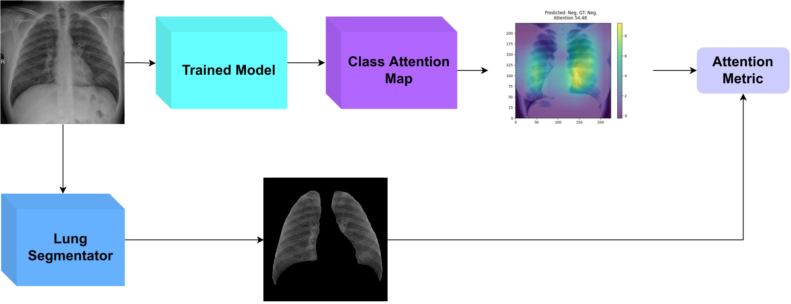

Self-Supervised Curricular Deep Learning for Chest X-Ray Image Classification
Deep learning technologies have already demonstrated a high potential to build diagnosis support systems from medical imaging data, such as Chest X-Ray images. However, the shortage of labeled data in the medical field represents one key obstacle to narrow down the performance gap with respect to applications in other image domains. In this work, we investigate the benefits of a curricular Self-Supervised Learning (SSL) pretraining scheme with respect to fully-supervised training regimes for pneumonia recognition on Chest X-Ray images of Covid-19 patients. We show that curricular SSL pretraining, which leverages unlabeled data, outperforms models trained from scratch, or pretrained on ImageNet, indicating the potential of performance gains by SSL pretraining on massive unlabeled datasets. Finally, we demonstrate that top-performing SSLpretrained models show a higher degree of attention in the lung regions, embodying models that may be more robust to possible external confounding factors in the training datasets, identified by previous works.
I. DeAndres-Tame, et al., "Self-Supervised Curricular Deep Learning for Chest X-Ray Image Classification", arXiv preprint arXiv:2301.10687, 2023
@article{tame2023self,
title={Self-Supervised Curricular Deep Learning for Chest X-Ray Image Classification},
author={DeAndres-Tame, Ivan and Sirotkin, Kirill and Carballeira, Pablo and Escudero-Vi{\~n}olo, Marcos},
journal={arXiv preprint arXiv:2301.10687},
year={2023}
}